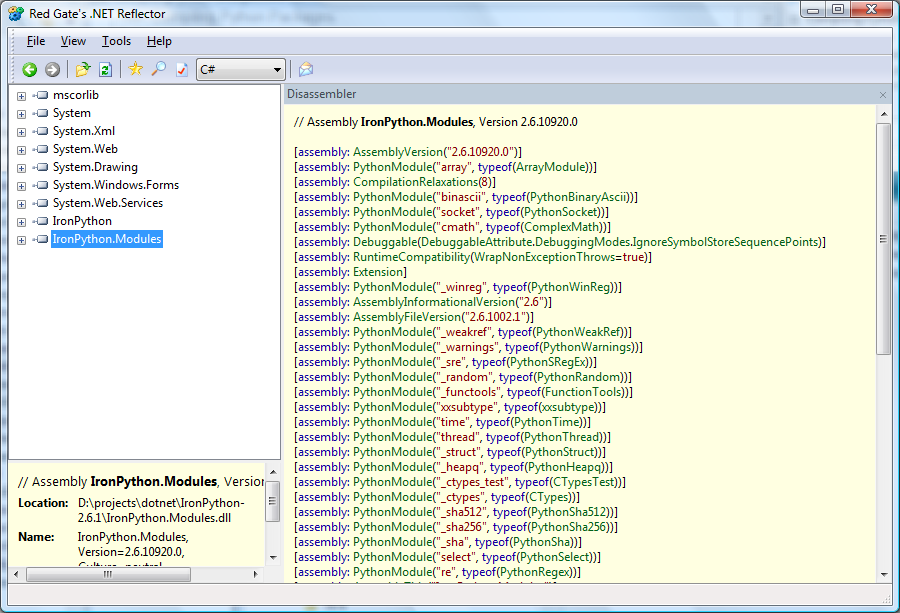
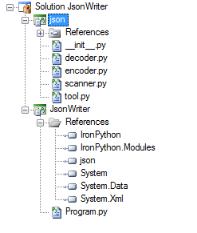
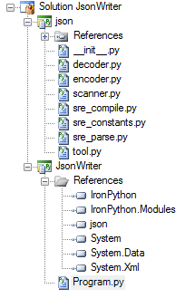

Here is a walkthrough on how to compile Python packages and modules, such as those provided by the Python Standard Library, so you can distribute your IronPython application as a set of standalone assemblies. If you just want to use the Python Standard Library without compiling parts of it into your application then you can add the path to the standard library as described in a previous post on using the Python Standard Library.
You will need to have SharpDevelop 3.2 and Python 2.6 installed on your machine. These can be downloaded from the following locations.
Before you start compiling a Python module or package into your application you should check whether it is already included with IronPython or whether you can use the .NET framework instead. A lot of the Python Standard Library modules are already included with IronPython. You can see which ones by using Reflector to look at IronPython.dll and IronPython.Modules.dll. Open these assemblies in Reflector, right click and select Disassemble. In the screenshot below the modules that are included with IronPython are defined by the PythonModule attribute.

Alternatively you can use the IronPython Modules Reader application to list all the available modules in IronPython.
If you need to use one of the modules provided by IronPython then add a reference to IronPython and IronPython.Modules in your project and then import the module in the normal way:
import cmath
Now we will look at writing a simple IronPython application that reads in a zip file using the zipfile module from the Python standard library. Our application will read the names of all the files in the zip file and display them in the console window. The code is shown below.
import zipfile
file = zipfile.ZipFile("test.zip", "r")
for name in file.namelist():
print name
Now if you create a python console project with SharpDevelop, copy the code above into the Program.py file, compile and run the program you will get an error saying "No module called zipfile". To fix this problem you can add the zipfile.py file from the Python standard library directly into your project. Simply right click your project, select Add Existing Item and browse to the zipfile in the python libs folder (e.g. C:\Python26\lib). If you compile your program again and run it you will get an error about a different module. The zipfile module depends on 13 other modules from the standard library. With a bit of trial and error you can work out which modules are needed. After adding these dependent modules to your project you will have a set of assemblies that do not require the Python Standard library to be installed.
The full code for the zip file reader application can be downloaded from the Zip File Reader link at the end of this post.
A Python module consists of a single file (e.g. zipfile.py). A Python package is a set of files inside a subdirectory. Compiling a package into your application cannot be done simply by including the files directly in your project. Instead you must compile the package files into a separate class library assembly. As an example we will look at using the json package. We will create a simple application that creates a json string from a dictionary. The code is shown below.
import json
address = {}
address["street"] = "24 22nd Street"
address["city"] = "New York"
address["state"] = "NY"
address["postCode"] = "10021"
person = {}
person["firstName"] = "John"
person["lastName"] = "Smith"
person["age"] = 20
person["address"] = address
print json.dumps(person)
Now to use the json package from our application we need to create a python class library project. Then we need to add all the files from the json package into this project and compile it. Finally in our Json Writer project we need to add a reference to this class library. The screenshot below shows the contents of the two projects.

Now this is not quite enough since the json package depends on several modules in the standard library. So now we add these to the json class library project. After adding these modules the json class library project should then contain the files as shown in the screenshot below.

You should now be able to compile and run your Json Writer application. The Json Writer application can now be distributed as a set of assemblies without needing the Python Standard Library to be installed.
The full code for the Json Writer application can be downloaded from the Json Writer link at the end of this post.
Finally here is a link to the license FAQ for Python and Python Standard Library that should be checked before you include the standard library in your application.